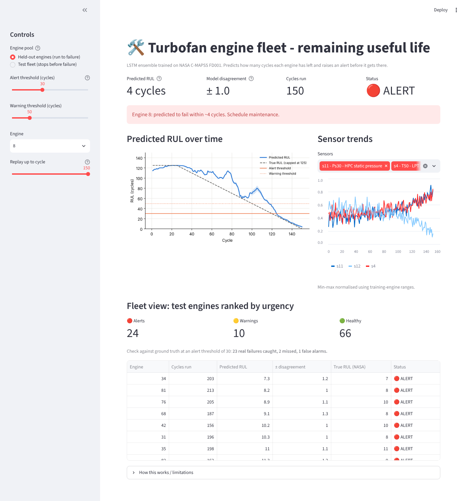

Engine Predictive Maintenance
Predict remaining useful life of turbofan engines on NASA C-MAPSS and raise an alert in time.
- Random Forest, XGBoost and a 3-seed LSTM ensemble, split by engine to avoid leakage.
- XGBoost RMSE 13.86; the LSTM ensemble is most accurate near failure (RMSE 3.99 within 30 cycles) and catches 23 of 25 real failures at a 30-cycle alert.
- Paired bootstrap shows the overall model differences are not statistically clear, and the write-up says so.
- Streamlit dashboard with replay slider and tunable alert thresholds.
- Python
- PyTorch
- XGBoost
- scikit-learn
- Streamlit